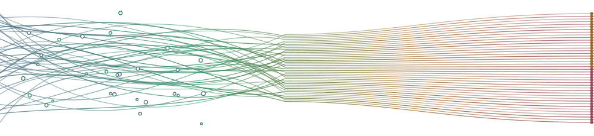

Metodi computazionali per l'analisi empirica delle qualità e degli effetti delle norme.
Tesi di laurea · Università degli Studi del Sannio · A.A. 2025/2026 · Antonella Ninfadoro · relatore prof. Nicola Lettieri
L'ho costruito insieme al mio relatore, il prof. Nicola Lettieri. Nella tesi propongo un modo di osservare il diritto. Qui quel modo viene messo alla prova su un caso concreto.
In pochi anni le tecnologie dell'informazione hanno reso osservabili aspetti della vita sociale che prima sfuggivano a qualsiasi misura. Per questo parlo di nuovi osservabili. I fenomeni sono quelli di sempre: cambia il modo di guardarli. La computazione permette di visualizzarli e misurarli. Questo vale anche per i fenomeni giuridici, che sono il centro della tesi.
La scelta del caso nasce dalla mia storia. Ho affrontato gli studi universitari durante una malattia onco-ematologica, e so quanto sia difficile far valere un diritto mentre ci si cura. Il mio relatore è stato tra i pochi a dare importanza al mio percorso, con grande umanità: mi ha aperto la strada, l'ha resa più semplice e mi ha permesso di sostenere l'esame a distanza. Il sito osserva proprio questa distanza: tra la tutela che la legge promette e quella che uno studente riesce davvero a ottenere.
La legge 104/1992 riconosce agli studenti con disabilità prove d'esame adattate: tempi più lunghi, ausili, prove equipollenti (art. 16). All'università queste misure passano per un'intesa con il docente (art. 16, comma 5). Prima ancora servono un accertamento sanitario, una domanda all'ateneo, una risposta in tempo per l'appello. Il sito osserva che cosa succede lungo questo percorso a uno studente in cura oncologica.
La computazione estende ciò che si può osservare.
Il diritto è anche relazioni, comportamenti, effetti.
Quattro livelli di indagine, dalla bellezza alla giustizia.
Tre prototipi sull'art. 16, in costruzione.
Lo stesso percorso visto a tre livelli: il testo, le norme collegate, gli effetti sulle persone.
Struttura, leggibilità e rinvii del testo vigente dell'articolo sulle prove d'esame.
In costruzione: testo da acquisire da Normattiva.
2 · le relazioni La reteLe norme da cui dipende l'art. 16: accertamento, tutorato, corsia rapida per i pazienti oncologici.
In costruzione: i collegamenti verranno dai rinvii riconosciuti nel testo.
3 · il percorso dello studente In tempo?Una simulazione del percorso fino all'appello: dove si ferma, quanto tarda, che cosa lo sblocca.
In costruzione: parametri da ricavare dalle interviste.
I prototipi sono dimostrazioni di fattibilità: mostrano che le procedure funzionano su testi e casi reali, senza pretendere di produrre conoscenza empirica validata.
Il framework è stato applicato prima ai permessi lavorativi dell'art. 33 della stessa legge. Quel sito resta consultabile così com'è: Costruire osservabili giuridici · l'art. 33.